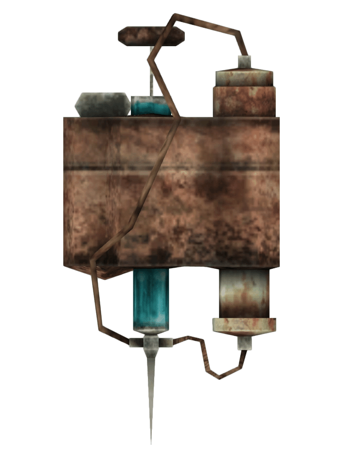

サイコ
DATE: 2025/11/12
登場作品 :
Fallout, Fallout 2, Fallout 3, Fallout: New Vegas, Fallout 4, Fallout 76,
Fallout Tactics, Fallout: The Board Game
効果 :
ゲームによって効果が異なります。
Fallout と Fallout 2 では、ダメージ耐性を増加させ、戦闘でより多くの攻撃に耐えられるようにします。
Fallout 3 と Fallout: New Vegas では、与えるダメージを増加させます。
後者のゲームでは、サイコはスラッシャーの材料でもあります。
Fallout 4 では、Fallout: New Vegasでのスラッシャーのように機能し、ダメージ耐性とSole Survivorのダメージ出力の両方を向上させます。
スラッシャー

登場作品:
Fallout: New Vegas
特徴 :
Med-Xとサイコの効果を1つの消費アイテムに組み合わせた薬物です。
スラッシャーの効果をMed-Xと組み合わせることで、合計50%のダメージ耐性ブーストを得ることが可能ですが、サイコとの効果は重複しません。
サイコジェット
登場作品 :
Fallout 4
特徴 :
スラッシャーと同様に、サイコとジェットという2つの薬物を組み合わせたものです。
ダメージ耐性を増加させ、時間を10秒間遅くします。
サイコバフ
登場作品 :
Fallout 4, Fallout 76
特徴 :
サイコとバファウトの組み合わせで、Endurance、Strength、最大体力、および与えるダメージを増加させます。
サイコタス
登場作品 :
Fallout 4, Fallout 76
特徴 :
サイコとメントスの組み合わせで、Perceptionとダメージ耐性を増加させます。
感想
いやぁー今シリーズ以外は一切薬物を使った事は無かったんですけどね。
レイドでポコポコ落とすものだからちょっとサイコバフをﾌﾟｽｯとしてみたらそこから薬物中毒に陥りました。
レイドボス前にﾌﾞｽｯ、日頃重量オーバーになってもﾌﾟｽｯ。
もう主人公の腕は針の跡で一杯でしょう。
なんでブラッドイーグルにはアディクトールが無いんでしょうね?
洗脳したままでいさせたいからなんだろうけど。
中毒がアディクトール一本で治るなら打ち得ですよね。
というわけで薬物に手を出したことの無いFalloutプレイヤーの皆さんも是非レイドや重量オーバーの時にはブスッとやってみて下さい。
EnduranceのChem Fiend Perkと併用して効果時間2倍にしてたんですが、今思えば2倍刺せば良いような・・?
けどメンタス・ベリー味が勿体ないからこのままでもいいか・・・ｳｰﾝ。
とりあえず色んなお薬試してみるのも76では楽しいと思います。
ダメ絶対!は現実で。
いやぁー今シリーズ以外は一切薬物を使った事は無かったんですけどね。
レイドでポコポコ落とすものだからちょっとサイコバフをﾌﾟｽｯとしてみたらそこから薬物中毒に陥りました。
レイドボス前にﾌﾞｽｯ、日頃重量オーバーになってもﾌﾟｽｯ。
もう主人公の腕は針の跡で一杯でしょう。
なんでブラッドイーグルにはアディクトールが無いんでしょうね?
洗脳したままでいさせたいからなんだろうけど。
中毒がアディクトール一本で治るなら打ち得ですよね。
というわけで薬物に手を出したことの無いFalloutプレイヤーの皆さんも是非レイドや重量オーバーの時にはブスッとやってみて下さい。
EnduranceのChem Fiend Perkと併用して効果時間2倍にしてたんですが、今思えば2倍刺せば良いような・・?
けどメンタス・ベリー味が勿体ないからこのままでもいいか・・・ｳｰﾝ。
とりあえず色んなお薬試してみるのも76では楽しいと思います。
ダメ絶対!は現実で。
TAGS: #Fallout76#Fallout4#Fallout3#FalloutNV#ClassicFallout#Item